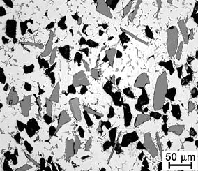
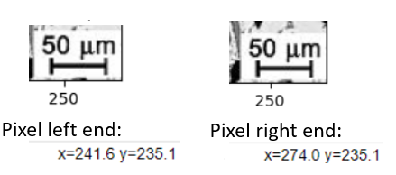
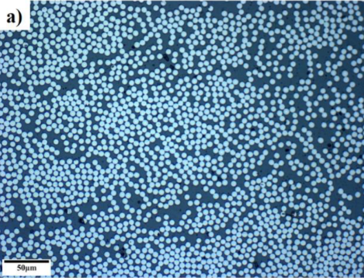
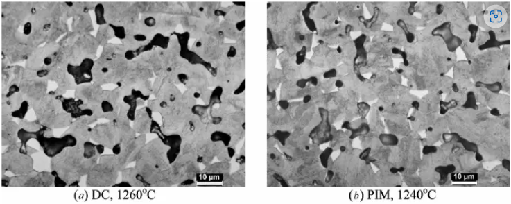

Analyzing Particles in a Matrix
Contents
13. Analyzing Particles in a Matrix#
Note
This lesson analyzes two different particle types in a single matrix. Your homework is less complex and only requires that you analyze one particle type so you will have to modify the code appropriately.
In this lesson, we would like to use our grain analysis method to analyze the fractional amount and size of two different reinforcing phases (gray and black) within a metal matrix (white) composite as shown in this image:
{kind=link}
Image copied from: http://www.keramverband.de/brevier_engl/3/4/4/3_4_4_2.htm accessed Nov 9, 2022. Figure 46. Breviary Technical Ceramics
Since this will require us to perform filtering, thresholding, and segmentation steps twice (once for each phase), it will definitely be worth while to rewrite our code from the previous lesson in the form of three functions: prep_image(), thresh_simple(), and segment().
13.1. Function Definitions#
import cv2 as cv
import numpy as np
from matplotlib import pyplot as plt
import matplotlib.image as mpimg
from scipy import ndimage
from skimage import io, color, measure
import pandas as pd
import copy
from PIL import Image
from IPython.display import display
from pathlib import Path
# prep_image takes our original Blue-Green-Red image, converts it to Red-Green-Blue, applies the pyramid filter, converts to
# grayscale, applies a gaussian blur, plots the images for us and
# and returns 4 data sets:
# (1) the image in RGB format
# (2) the image filtered with pyramid filter
# (3) the grayscale image after pyramid filtering
# (4) the gaussian blured image in grayscale
def prep_image(BGR_image, pyr_size, pyr_range, blur_size):
img_RGB=cv.cvtColor(BGR_image,cv.COLOR_BGR2RGB)
img_shift=cv.pyrMeanShiftFiltering(img_RGB, pyr_size, pyr_range) #acts on original image
gray=cv.cvtColor(img_shift,cv.COLOR_BGR2GRAY) #move img to gray scale
blur=cv.GaussianBlur(gray,(blur_size,blur_size),0) # acts on gray scale image
fig, (ax1, ax2, ax3) = plt.subplots(nrows=1, ncols=3,figsize=(18, 8))
ax1.imshow(imgfull)
ax2.imshow(gray, cmap='gray')
ax3.imshow(blur, cmap='gray')
ax1.set_title('Original Image (RGB)')
ax2.set_title('+ Pyramid Mean Shift Filter (GrayScale)')
ax3.set_title('Gaussian Blur (GrayScale)')
plt.tight_layout()
return(img_RGB, img_shift, gray, blur)
# thresh_simple takes a grayscale image, applies a simple threshold with min, max variables, and
# removes noise with the opening filter
# plots the original image along with the thresholded image
# and returns 1 data set:
# (1) a thresholded grayscale image containing only black (0) and white (255) pixels
def thresh_simple(image_gray, min, max, kernel_size, open_iterations):
ret, thresh = cv.threshold(image_gray,min,max,cv.THRESH_BINARY_INV)
kernel=cv.getStructuringElement(cv.MORPH_CROSS,(kernel_size,kernel_size))
opening = cv.morphologyEx(thresh,cv.MORPH_OPEN,kernel, iterations=open_iterations)
fig, (ax1, ax2) = plt.subplots(nrows=1, ncols=2,figsize=(14, 27))
ax1.imshow(image_gray, cmap='gray')
ax2.imshow(opening, cmap='gray')
ax1.set_title('Grayscale Image')
ax2.set_title('Threshold Image (B&W)')
plt.tight_layout()
return(opening)
# segment takes our original Red-Green-Blue image and our thresholded image (grayscale), and applies
# a dilation to find the sure background; an erosion to find the sure foreground, and subtracts these to find the unknown
# it then applies the watershed algorithm and marks all foreground regions with an integer value
# Plotted: the original RGB image and the color coded semented image
# and returns 6 data sets:
# (1) the original image in RGB format
# (2) the sure background image
# (3) the sure foreground image
# (4) the unknown region image
# (5) the array of markers for each feature
# (6) the color coded image
def segment(imgRGB,thresh_img, kernel_size, dilate_iter, erode_iter):
img_RGB=copy.copy(imgRGB)
kernel=cv.getStructuringElement(cv.MORPH_CROSS,(kernel_size,kernel_size))
sure_bg = cv.dilate(thresh_img,kernel,iterations = dilate_iter)
sure_fg = cv.erode(thresh_img,kernel,iterations = erode_iter)
unknown = cv.subtract(sure_bg,sure_fg)
ret, markers = cv.connectedComponents(sure_fg)
markers = markers+1
markers[unknown==255] = 0
markers = cv.watershed(img_RGB,markers)
img_RGB[markers ==-1] = [255,0,0]
img2=color.label2rgb(markers, image=img_RGB, bg_label=1, alpha=0.35)
fig, (ax1, ax2) = plt.subplots(nrows=1, ncols=2,figsize=(18, 8))
ax1.imshow(imgRGB)
ax2.imshow(img2, aspect='equal');
ax1.set_title('marked')
ax2.set_title('colored')
plt.tight_layout()
return(img_RGB, sure_bg, sure_fg, unknown, markers, img2)
13.2. Read image and prep for thresholding#
imgfull=cv.imread('../images/13_metal_matrix_composite.jpg') # cv.imread reads the image in Blue-Green-Red format
BGR_img=imgfull[0:215, :] # I already found where to slice the image to remove the micron bar
# remember to identify your 4 variables here for the 4 returned values for this function
# I'm calling them: img, img_shift, img_gray and img_blur
img, img_shift, img_gray, img_blur=prep_image(BGR_img, 5, 11, 3) # image (BGR), pyr size, pyr range, blur size
#the output is shown below. Adjust the pyr size, pyr range, and blur size to see how it affects the final image
In this problem, we have two different gray levels to threshold so it might help to know where these values lie. Let’s use a histogram to see this.
pd.Series(img_blur.flatten()).hist(bins=80); # this is a histogram of gray levels
# 0 is black, 125 looks like our gray phase, 255 is pure white
13.3. Perform two different Thresholds#
(1) The strategy here is to turn everything below 200 to white and above 200 to black. This will capture both our gray and black phases.
(2) Then do this again for a value of 100 which will capture only the black regions.
(3) By subtracting (2) from (1) we will get only the gray regions.
We can then analyze the black thresholded image and the gray thresholded image separately to look at each phase
#see the definition for thresh_simple above for an explanation of the values 3 and 1 used below
thresh_blur1=thresh_simple(img_blur, 200, 255, 3, 1) #everything below 200 is set to white
thresh_blur2=thresh_simple(img_blur, 100, 255, 3, 1) #everything below 100 is set to white
fig = plt.figure(figsize=(10,10))
ax = fig.add_subplot(111) # 1x1 grid, first subplot
thresh=thresh_blur1-thresh_blur2 #this gives only the gray regions as white
ax.imshow(thresh, cmap='gray')
plt.show()
13.4. Mark and Color Code the Image using our function segment()#
# here are the marked and colorcoded black regions
img_marked2, sure_bg2, sure_fg2, unknown2, markers2, img_colored2 = segment(img,thresh_blur2, 3, 2, 2)
# here are the marked and colorcoded gray regions
img_marked3, sure_bg3, sure_fg3, unknown3, markers3, img_colored3 = segment(img,thresh_blur1-thresh_blur2, 3, 2, 2)
13.5. Image Summary#
Now lets combine our two images to highlight the black and gray regions in one image. This is not necessary but it makes a nice summary image to see how we did.
Now recall that in our markers array:
(1) The background pixels are marked as 1
(2) The boundaries are marked as -1
(3) The individual phases are numbered in order from 2 to the number of particles
# we have two conditions that we want to test for
# markers2 is the numbered black phases
cond2=markers2>1 #this marks all pixels that have a value greater than 1 to "True" and "False" otherwise
# markers3 is the numbered gray phases
cond3=markers3>1
# Let's make copies of the original image and the two colored images so we don't change these directly
# Note that these images are all RGB colored images
img_original=copy.copy(img)
img_blackphase=copy.copy(img_colored2)
img_grayphase=copy.copy(img_colored3)
# When setting pixel colors here we have to give [Red, Green, Blue]
img_blackphase[cond2]=[0.4,0.1,0.4] # set all black particles to light purple
img_blackphase[~cond2]=[0,0,0] # set all other pixels to black
img_grayphase[cond3]=[0,0.4,0.4] # all gray particles to green-blue
img_grayphase[~cond3]=[0,0,0] # all other pixels to black
# I need to remove the color from all particles in the original image so we can add our colored particles
img_original[cond2|cond3]=[0,0,0] # keep background of original image but convert all black and gray particles to black
# Let's add the two colored images above with the original image
# the RGB values in the first two images are given as floats from 0 to 1
# the RGB values in img_original are given as integers from 0 to 255 so I need to divide below to convert to 0 to 1
img_combined=img_blackphase+img_grayphase+img_original/255
Now let’s plot our two recolored particles and add them all together with the original image
fig, (ax1, ax2, ax3) = plt.subplots(nrows=1, ncols=3,figsize=(18, 18))
ax1.imshow(img_blackphase+img_grayphase)
ax2.imshow(img)
ax3.imshow(img_combined)
ax1.set_title('Black (purple) and Gray (blue-green) Phases')
ax2.set_title('Original Image')
ax3.set_title('Combined Image')
plt.tight_layout()
13.6. Find Pixel Calibration#
Each colored grain can now be analyzed and placed in a Pandas DataFrame. We need our original multi-colored files for these. First let’s get our \(\mu\)m per pixel value:
%matplotlib widget
plt.imshow(imgfull);
plt.tight_layout()
%matplotlib inline
By scrolling on the image, you can read off the pixel value at the start and end of the 50 \(\mu m\) bar. As shown below, the micron bar has a length or 274.0 - 241.6 = 32.4
{kind=link}
pixels_to_μm=50/(274.0-241.6) # 50 μm per (274-241.6) pixels
13.7. Analyze Particles#
13.7.1. Black Phase#
propList=['label','eccentricity','centroid','area','equivalent_diameter','orientation','major_axis_length', 'minor_axis_length','perimeter']
#propList=['equivalent_diameter','orientation','area','major_axis_length']
props_black=measure.regionprops_table(markers2, properties=propList) # markers2 is for the black pixels
props_gray=measure.regionprops_table(markers3, properties=propList) # markers3 is for the gray pixels
black_data=pd.DataFrame(props_black)
gray_data=pd.DataFrame(props_gray)
black_data.head() # label=1 is background
| label | eccentricity | centroid-0 | centroid-1 | area | equivalent_diameter | orientation | major_axis_length | minor_axis_length | perimeter | |
|---|---|---|---|---|---|---|---|---|---|---|
| 0 | 1 | 0.655419 | 103.768453 | 141.502055 | 48664 | 248.919524 | -1.483001 | 325.478960 | 245.822913 | 4386.675683 |
| 1 | 2 | 0.835002 | 4.548780 | 12.353659 | 82 | 10.217908 | 0.992072 | 14.225073 | 7.827297 | 36.142136 |
| 2 | 4 | 0.696056 | 5.171233 | 160.013699 | 146 | 13.634257 | 1.476241 | 17.110472 | 12.285113 | 50.420310 |
| 3 | 5 | 0.967957 | 18.613333 | 279.706667 | 150 | 13.819766 | -0.038474 | 29.760078 | 7.473212 | 66.834524 |
| 4 | 6 | 0.841532 | 16.250000 | 3.486111 | 72 | 9.574615 | 0.120472 | 13.397863 | 7.237616 | 32.485281 |
Let’s print the numeric label for each black grain
colored_image=img_colored2
data_table=black_data
fig = plt.figure(figsize=(8,8))
ax = fig.add_subplot(111) # 1x1 grid, first subplot
ax.imshow(colored_image, aspect='equal');
[ax.annotate(f'{label:0.0f}', xy=(posx, posy), c='white',fontsize=14, horizontalalignment='center', verticalalignment='center') for label, posx, posy in np.array(data_table.loc[1:,['label','centroid-1','centroid-0']])]
plt.show()
13.7.2. Gray Phase#
gray_data.head() # label = 1 is background
| label | eccentricity | centroid-0 | centroid-1 | area | equivalent_diameter | orientation | major_axis_length | minor_axis_length | perimeter | |
|---|---|---|---|---|---|---|---|---|---|---|
| 0 | 1 | 0.657396 | 105.084151 | 139.155742 | 48009 | 247.238665 | 1.515886 | 328.124133 | 247.256514 | 4339.149817 |
| 1 | 2 | 0.816497 | 1.333333 | 45.666667 | 3 | 1.954410 | -0.785398 | 2.309401 | 1.333333 | 3.414214 |
| 2 | 3 | 0.000000 | 1.000000 | 97.000000 | 1 | 1.128379 | 0.785398 | 0.000000 | 0.000000 | 0.000000 |
| 3 | 4 | 0.869379 | 11.852368 | 147.693593 | 359 | 21.379733 | 0.747219 | 31.416606 | 15.524390 | 88.219300 |
| 4 | 5 | 0.947692 | 12.214724 | 182.263804 | 163 | 14.406181 | -0.525570 | 26.744448 | 8.536455 | 64.083261 |
Let’s show the labels for the gray particles
colored_image=img_colored3
data_table=gray_data
fig = plt.figure(figsize=(8,8))
ax = fig.add_subplot(111) # 1x1 grid, first subplot
ax.imshow(colored_image, aspect='equal');
[ax.annotate(f'{label:0.0f}', xy=(posx, posy), c='white',fontsize=14, horizontalalignment='center', verticalalignment='center') for label, posx, posy in np.array(data_table.loc[1:,['label','centroid-1','centroid-0']])]
plt.show()
13.7.3. Example Analyses#
# indentifying the data sets to use so I don't have to change the variables in all the code below
grain_data=gray_data
markers=markers3
13.7.3.1. Number of Particles#
#number of particles
len(grain_data.loc[1:, 'label']) #skipping first row since that is the background. only count particles
89
13.7.3.2. Average particle diameter#
temp=(grain_data.loc[1:,'equivalent_diameter']*pixels_to_μm).mean() #table in units of pixels so convert using pixels_to_μm
print(f'average particle diameter = {temp:0.1f} μm')
average particle diameter = 13.0 μm
13.7.3.3. Average Area#
temp=(grain_data.loc[1:,'area']*pixels_to_μm**2).mean() #don't forget to square pixel to μm conversion since we are looking at an area
print(f'average particle area = {temp:0.1f} μm^2')
average particle area = 247.1 μm^2
13.7.3.4. Area percent / fraction#
interface_pix=len(markers[markers==-1]) #interface pixels are labeled -1
#let's assign half of the interface pixels to the background and half to the particles
background_pix=len(markers[markers==1])+interface_pix/2 #background pixels are labeled 1
particles_pix=len(markers[markers>1])+interface_pix/2 #particle pixels are all numbers greater than 1
total_pix=background_pix+particles_pix
print(f'Percentage of gray phase is: {particles_pix/total_pix*100:0.1f} %')
Percentage of gray phase is: 18.2 %
13.7.3.5. Particle Orientations#
Histogram of particle orientations. Measures angle from the vertical for the long axis of a given particle. Useful for seeing any orientation preference in the material.
(grain_data['orientation']*180/np.pi).hist(bins=45); # these angles are measured relative to the vertical
13.7.3.6. Particle Eccentricity#
A value of zero corresponds to a circle.
# when eccentricity = 0 the ellipse becomes a circle
grain_data.loc[1:, 'eccentricity'].hist(bins=40);
13.7.3.7. Histogram of Particle Diameters.#
Let’s use matplotlib’s histogram for more control.
n, bins, patches = plt.hist((grain_data.loc[1:, 'equivalent_diameter']*pixels_to_μm), bins=50, density=False, facecolor='g', alpha=0.75)
plt.xlabel('Diameter, μm')
plt.ylabel('Probability')
plt.title('Histogram of Particle Diameters')
#plt.xlim(0, 60)
#plt.ylim(0, 0.15)
plt.grid(True)
plt.show()
13.7.4. Repeat for the black particles if you would like (use black_data and markers2)#
# grain_data=black_data
# markers=markers2
13.8. Exercises#
13.8.1. Problem 1#
Find the average particle size, particle size histogram, eccentricity histogram and the total area percent of fiber.
13.8.1.1. Carbon Fibre Epoxy Composite#
{kind=link}
M. Çelik, T. Noble, F. Jorge, R. Jian, C. M. Ó Brádaigh, and C. Robert, “Influence of Line Processing Parameters on Properties of Carbon Fibre Epoxy Towpreg,” Journal of Composites Science, vol. 6, no. 3, p. 75, 2022.
13.8.2. Problem 2#
Find the area fraction of porosity in image (a) below.
13.8.2.1. Powder Metallurgy of 17-4 PH Stainless Steel#
{kind=link}
Wu, Y., Blaine, D., Schlaefer, C., Marx, B., & German, R. M. (2002). Sintering densification and microstructural evolution of injection molding grade 17-4 PH stainless steel powder. Metallurgical and Materials Transactions A, 33(7), 2185–2194.